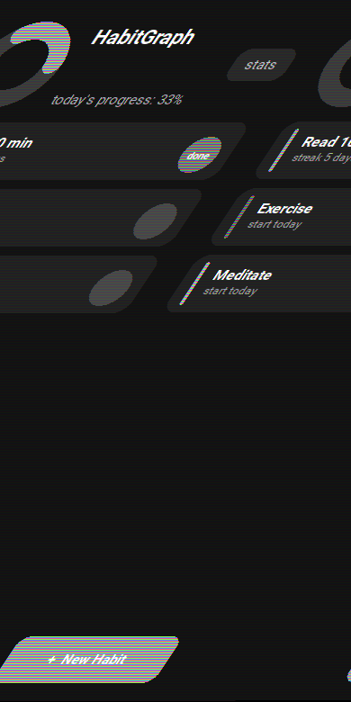
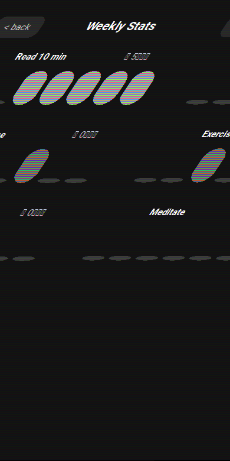
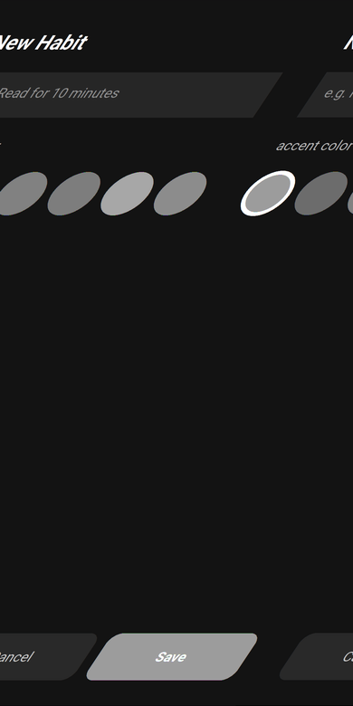

open source · MIT licensed
HabitGraph is a small, offline-first habit tracker built with Python and Kivy. Check things off, watch your streak build, and ship the whole thing to your own phone — no account, no server, no ads.
// screenshots
Today's list, a weekly breakdown per habit, and a form to add a new one. That's the whole app.

home — today's checklist

stats — 7-day breakdown

new habit — name + color
// why it's built this way
No charting library, no cloud sync, no dependency you'd have to explain in a security review.
The progress ring and weekly bars are ~100 lines of Kivy canvas code. No matplotlib, no extra native deps.
Streaks and storage live in plain Python, tested with pytest. The UI can't leak into the tests.
One JSON file on your device. Nothing leaves your phone, nothing needs a login.
Consecutive-day math, not a vague "you're doing great" — the count is exact and walks the log backwards.
Every push to main runs Buildozer in GitHub Actions and hands you a debug APK as an artifact.
Same Python source targets Android and iOS through Buildozer — no separate native projects to maintain.
// get it running
Grab the latest build from CI, or build it yourself in two commands.
Requires Linux or WSL. First build downloads the Android SDK/NDK.
pip install buildozer
buildozer android debugFor development, HabitGraph runs as a regular window.
pip install kivy
python main.pyEvery push to main builds a fresh APK automatically.
GitHub → Actions →
"Build Android APK" → latest run →
Artifacts → habitgraph-debug-apk